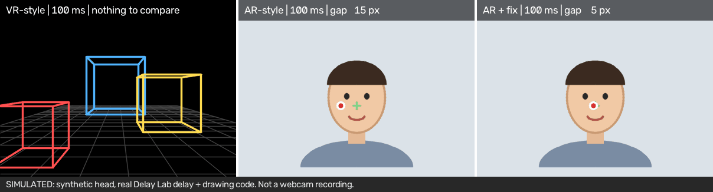
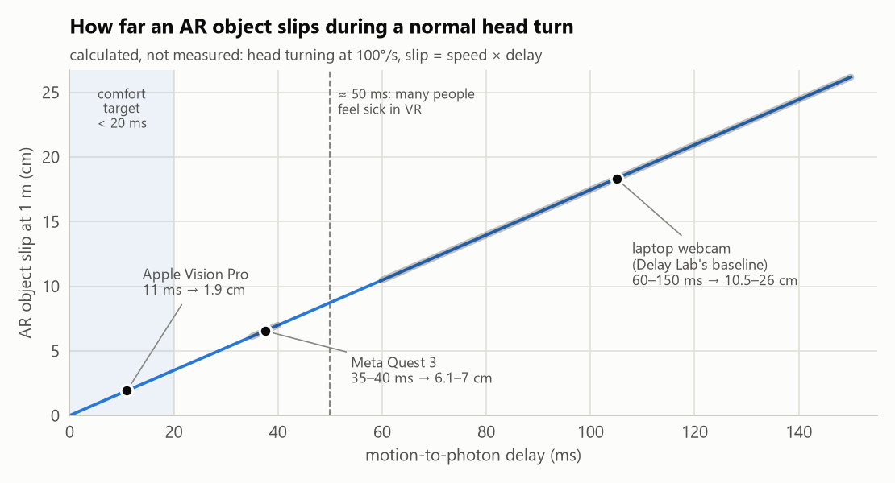
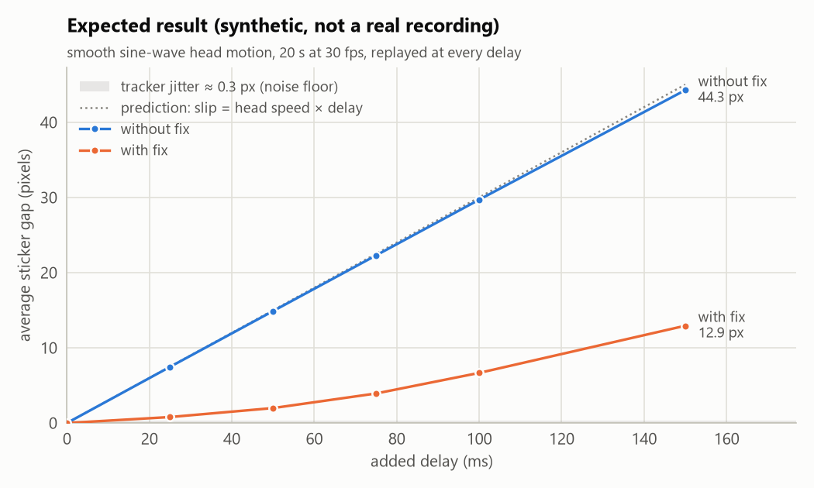

See why AR punishes headset delay more than VR, on an ordinary laptop webcam. Add a delay, watch a sticker slide off your nose, measure the slide in pixels, then fix it with prediction.

When you move your head, the picture catches up a few milliseconds afterwards.
The whole fake world is late together. You only feel it, as floatiness or, above about 50 ms, sickness.
The real world is never late, so a virtual object visibly slides off the real thing it was stuck to.
slip = head speed × delay
At a normal 100°/s head turn, 20 ms of delay moves an AR object 1 m away by about 3.5 cm.

Camera hidden. A wireframe room moves with your delayed head.
Your live face, with a red sticker at the delayed nose position.
The sticker is drawn where your head is predicted to be: late position + speed × delay.
A slider sets the added delay (0–150 ms). The strip at the top shows the gap between the sticker and your real nose, in pixels.
✅ Verified: the app runs live on a laptop webcam (~30 fps, face found in ~100% of frames), the packaged exe runs without Python, and 26 tests pass.
⏳ Pending: the 20-second sweep recording the experiment is built around. Want to record the first one?
⚠️ So far: the only real measurement is one 2.5 s self-test clip. That's a first sign, not a result.

Windows 10/11, a webcam and Python 3.11. Or download DelayLab.exe and skip Python altogether.
py -3.11 -m venv .venv && .venv\Scripts\activate pip install -r requirements.txt python download_model.py # one-time, ~4 MB face model python app.py # or: python app.py --selftest 8
| System | Motion-to-photon delay | AR slip at 1 m (100°/s) |
|---|---|---|
| Comfortable VR target (3GPP TR 26.918) | < ~20 ms | < 3.5 cm |
| Apple Vision Pro passthrough | ~11 ms | ~1.9 cm |
| Meta Quest 3 / Quest Pro / HTC Vive XR Elite | ~35–40 ms | ~6–7 cm |
| A laptop webcam pipeline | ~60–150 ms | ~10–26 cm |
The tests run on synthetic head tracks, so you can work on the sweep maths, charts, docs and CI without a camera. Look for good first issues, or ask in Discussions.